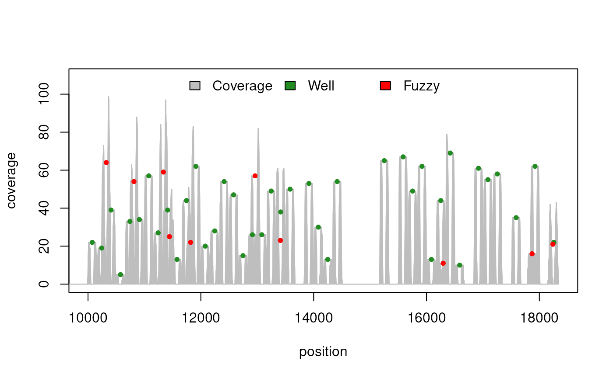
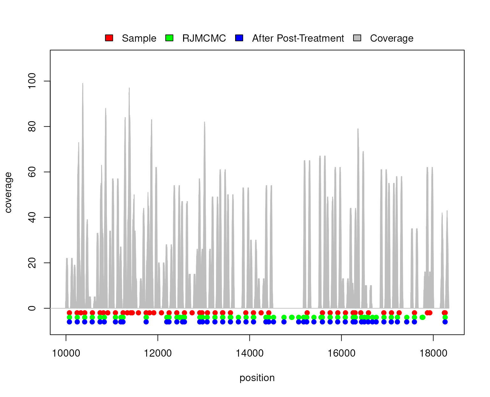

Package: RJMCMCNucleosomes
Authors: Pascal Belleau [aut] (ORCID: https://orcid.org/0000-0002-0802-1071), Rawane Samb
[aut], Astrid Deschênes [cre, aut] (ORCID: https://orcid.org/0000-0001-7846-6749), Khader Khadraoui
[aut], Lajmi Lakhal-Chaieb [aut], Arnaud Droit [aut]
Version: 1.37.1
Compiled date:
2026-11-04
License: Artistic-2.0
Licensing and citing
The RJMCMCNucleosomes package and the underlying RJMCMCNucleosomes code are distributed under the Artistic license 2.0. You are free to use and redistribute this software.
If you use this package for a publication, we would ask you to cite the following:
Samb R, Khadraoui K, Belleau P, et al. (2015) Using informative Multinomial-Dirichlet prior in a t-mixture with reversible jump estimation of nucleosome positions for genome-wide profiling. Statistical Applications in Genetics and Molecular Biology. Volume 14, Issue 6, Pages 517-532, ISSN (Online) 1544-6115, ISSN (Print) 2194-6302, December 2015, doi:10.1515/sagmb-2014-0098
The Research Resource Identifier (RRID) for the RJMCMCNucleosomes package is RRID:SCR_029241.
Introduction
Global gene expression patterns are established and maintained by the concerted actions of transcription factors (TFs) and the proteins that constitute chromatin. The key structural element of chromatin is the nucleosome, which consists of an octameric histone core wrapped by 145-147 bp of DNA and connected to its neighbor by approximately 10-80 bp of linker DNA (Polishko et al. 2012).
The literature on nucleosome positioning commonly focuses on frequentist inferences within parametric approaches (see for instance Chen et al. (2010) and Xi et al. (2010)). In those works, the detection of nucleosome positions is done using a hidden Markov model with an assumed known order.
The RJMCMCNucleosomes package is an implementation of a fully Bayesian hierarchical model for profiling of nucleosome positions based on high-throughput short-read data (MNase-Seq data). The implementation is based on a strategy which incorporates four aspects. First, it jointly models local concentrations of directional reads. Second, it uses a Multinomial-Dirichlet model in the construction of an informative prior distribution coupled to a t-mixture model with unknown degrees of freedom. Third, the number of nucleosomes is considered to be a random variable and refers to a prior distribution. Fourth, the unknown parameters are simultaneously estimated using the reversible jump Markov chain Monte Carlo (RJMCMC) simulation technique (see for instance Green (1995) and Richardson and Green (1997)).
Detailed information about the model can be found in the article mentioned in the citing section.
Installation
To install the latest version of the RJMCMCNucleosomes package, BiocManager must first be installed:
if (!requireNamespace("BiocManager", quietly=TRUE))
install.packages("BiocManager")
BiocManager::install("RJMCMCNucleosomes")The RJMCMCNucleosomes package contains C++ code that
uses the GNU Scientific Library (GSL). When the package is installed
from source, the GSL must be available on the system (for example, the
libgsl-dev package on Debian/Ubuntu or
brew install gsl on macOS). On Windows, the GSL is included
in Rtools.
Loading the RJMCMCNucleosomes package
As with any R package, the RJMCMCNucleosomes package should first be loaded with the following command:
RJMCMCNucleosomes analysis
A typical RJMCMCNucleosomes analysis consists of the following steps:
- Segment the analyzed region into candidate regions that have sufficient aligned reads. The initial region cannot be wider than one chromosome.
- Estimate nucleosome positions for each region.
- Regroup all regions together. The final region cannot be wider than one chromosome.
- Post-process predictions of the regrouped region to revise certain predictions.
RJMCMCNucleosomes analysis step by step
A synthetic nucleosome sample containing 50 nucleosomes (40 well-positioned + 10 fuzzy) has been created using the Bioconductor package nucleoSim. This synthetic sample will be used throughout this analysis.
## Load nucleoSim package
library(nucleoSim)
val.num <- 50 ### Number of well-positioned nucleosomes
val.del <- 10 ### Number of well-positioned nucleosomes to delete
val.var <- 30 ### Variance associated to well-positioned nucleosomes
val.fuz <- 10 ### Number of fuzzy nucleosomes
val.fuz.var <- 50 ### Variance associated to fuzzy nucleosomes
val.max.cover <- 70 ### Maximum coverage for one nucleosome
val.nuc.len <- 147 ### Nucleosome length
val.len.var <- 10 ### Variance associated to the length of the reads
val.lin.len <- 20 ### The length of the DNA linker
val.rnd.seed <- 100 ### Set seed when result needs to be reproducible
val.offset <- 10000 ### The number of bases used to offset all
### nucleosomes and reads
## Create sample using a Normal distribution
sample <- nucleoSim::syntheticNucReadsFromDist(wp.num=val.num,
wp.del=val.del, wp.var=val.var,
fuz.num=val.fuz, fuz.var=val.fuz.var,
max.cover=val.max.cover,
nuc.len=val.nuc.len,
len.var=val.len.var,
lin.len=val.lin.len,
rnd.seed=val.rnd.seed,
distr="Normal", offset=val.offset)
## Create visual representation of the synthetic nucleosome sample
plot(sample)
Split the analyzed region into segments
It is suggested, in order to accelerate the learning process, to
split the analyzed region into segments. Moreover, it is mandatory to
analyze each chromosome separately since the rjmcmc
function can only analyze one chromosome at a time.
Region segmentation can be done using the segmentation
function. Beware that the larger the segment (parameter
maxLength), the higher the number of iterations needs to be
to reach convergence during the nucleosome prediction step.
## Load needed packages
library(GenomicRanges)
## Transform sample dataset into GRanges object
sampleGRanges <- GRanges(seqnames=sample$dataIP$chr,
ranges=IRanges(start=sample$dataIP$start,
end=sample$dataIP$end),
strand=sample$dataIP$strand)
## Segment sample into candidate regions
sampleSegmented <- segmentation(reads=sampleGRanges, zeta=147,
delta=40, maxLength=1000)
## Number of segments created
length(sampleSegmented)
## [1] 11Run RJMCMCNucleosomes for nucleosome predictions
The rjmcmc function must be run on each candidate
region. As an example, the first candidate region is processed using a
very low number of iterations. On real data, the number of iterations
should be higher (easily 1000000 iterations).
## Extract the first segment
segment01 <- sampleSegmented[[1]]
## Run RJMCMC analysis
## A higher number of iterations is recommended for real analysis
resultSegment01 <- rjmcmc(reads=segment01, nbrIterations=100000,
lambda=3, kMax=30,
minInterval=100, maxInterval=200,
minReads=5, vSeed=1921)
## Print the predicted nucleosomes for the first segment
resultSegment01
## RJMCMCNucleosomes - Predicted nucleosomes
##
## Call:
## rjmcmc(reads = segment01, nbrIterations = 1e+05, kMax = 30, lambda = 3,
## minInterval = 100, maxInterval = 200, minReads = 5, vSeed = 1921)
##
## Number of nucleosomes:
## [1] 5
##
## Nucleosomes positions:
## GRanges object with 5 ranges and 0 metadata columns:
## seqnames ranges strand
## <Rle> <IRanges> <Rle>
## [1] chr_SYNTHETIC 10078 *
## [2] chr_SYNTHETIC 10260 *
## [3] chr_SYNTHETIC 10322 *
## [4] chr_SYNTHETIC 10406 *
## [5] chr_SYNTHETIC 10796 *
## -------
## seqinfo: 1 sequence from an unspecified genome; no seqlengthsRegroup all regions
Once all segments have been analyzed, the predicted nucleosomes can be merged together. Two functions are available to facilitate the merging process:
- mergeRDSFiles function: A vector containing the names of all RDS files to merge is passed to it
- mergeAllRDSFilesFromDirectory function: the name of the directory (relative or absolute path) containing all RDS files to merge is passed to it
Beware that segments from different chromosomes should not be merged together.
The segments of the sample, which has been created earlier, have all been processed (using 500000 iterations) and saved in RDS files. Those will now be merged together.
## The directory containing the results of all segments
## One RDS file has been created for each segment
directory <- system.file("extdata", "demo_vignette",
package="RJMCMCNucleosomes")
## Merging predicted nucleosomes from all segments
resultsAllMerged <- mergeAllRDSFilesFromDirectory(directory)
resultsAllMerged
##
## RJMCMCNucleosomes - Predicted nucleosomes
##
## Number of nucleosomes:
## [1] 63
##
## Nucleosomes positions:
## GRanges object with 63 ranges and 0 metadata columns:
## seqnames ranges strand
## <Rle> <IRanges> <Rle>
## [1] chr_SYNTHETIC 10075 *
## [2] chr_SYNTHETIC 10245 *
## [3] chr_SYNTHETIC 10407 *
## [4] chr_SYNTHETIC 10571 *
## [5] chr_SYNTHETIC 10742 *
## ... ... ... ...
## [59] chr_SYNTHETIC 17421 *
## [60] chr_SYNTHETIC 17589 *
## [61] chr_SYNTHETIC 17756 *
## [62] chr_SYNTHETIC 17771 *
## [63] chr_SYNTHETIC 18257 *
## -------
## seqinfo: 1 sequence from an unspecified genome; no seqlengthsPost-process predictions
In some cases the RJMCMC method tends to over-split the distribution of reads for a single nucleosome. Although this characteristic increases the number of false positives, it is still beneficial for the regions rich in nucleosomes.
A function, that merges closely positioned nucleosomes, has been implemented to rectify the over-splitting and provide more conservative results.
The postTreatment function must be run on the entire
analyzed region to be efficient. It should not be run on
segmented results. The function needs the positions of the
reads used for the RJMCMC analysis.
The value of extendingSize should be kept low (below
20). A larger value could cause the possible merge of true
nucleosomes.
## Create a GRanges with the reads of the initial sample
reads <- GRanges(sample$dataIP)
## Number of nucleosomes before the post-treatment
resultsAllMerged$k
## [1] 63
## Use the post-treatment function
resultsPostTreatment <- postTreatment(reads=reads,
resultRJMCMC=resultsAllMerged,
extendingSize=15,
chrLength=max(start(reads), end(reads)) + 1000)
## Number of nucleosomes after the post-treatment
length(resultsPostTreatment)
## [1] 49The postTreatment function can significantly reduce the
number of nucleosomes by merging closely positioned nucleosomes.
Visualization of the predicted nucleosomes
Visualization of the predicted nucleosomes, with its associated read coverage, is available in the RJMCMCNucleosomes package.
The plotNucleosomes function needs the nucleosome
positions and the reads, in a GRanges format, to create a
graph. When reads are used to predict more than one set of nucleosome
positions (for example, before and after post-treatment or results from
different software), the predictions can be merged in a
GRangesList so that all predictions can be plotted
simultaneously.
## Extract reads to create a GRanges
reads <- GRanges(sample$dataIP)
## Merge predictions from before post-treatment and after post-treatment in
## a GRangesList so that both results will be shown in graph
resultsBeforeAndAfter <- GRangesList(
Sample=GRanges(rep("chr_SYNTHETIC",
length(c(sample$wp$nucleopos,sample$fuz$nucleopos))),
ranges=IRanges(start=c(sample$wp$nucleopos,sample$fuz$nucleopos),
end=c(sample$wp$nucleopos,sample$fuz$nucleopos)),
strand=rep("*", length(c(sample$wp$nucleopos,
sample$fuz$nucleopos)))),
BeforePostTreatment=resultsAllMerged$mu,
AfterPostTreatment=resultsPostTreatment)
## Create graph using nucleosome positions and reads
## The plot will show:
## 1. nucleosomes from the sample
## 2. nucleosomes detected by rjmcmc() function
## 3. nucleosomes obtained after post-treatment
plotNucleosomes(nucleosomePositions=resultsBeforeAndAfter, reads=reads,
names=c("Sample", "RJMCMC", "After Post-Treatment"))
RJMCMCNucleosomes analysis of one chromosome in one step
The rjmcmcCHR function can analyze an entire chromosome
by automatically splitting the reads into segments, running
rjmcmc on each segment, merging and post-processing the
results. The intermediate results are saved in a directory set by the
dirOut parameter.
On real chromosome data, the rjmcmcCHR can take some
time to execute. We strongly suggest running it on a multi-core computer
and to use as many available cores as possible by setting the
nbCores parameter.
## Load synthetic dataset of reads
data(syntheticNucleosomeReads)
## Number of reads in the dataset
nrow(syntheticNucleosomeReads$dataIP)
## Use the dataset to create a GRanges object
sampleGRanges <- GRanges(syntheticNucleosomeReads$dataIP)
## All reads are related to one chromosome called "chr_SYNTHETIC"
seqnames(sampleGRanges)
## Run RJMCMC on all reads
## The output directory is a temporary directory
result <- rjmcmcCHR(reads=sampleGRanges,
seqName="chr_SYNTHETIC",
dirOut=file.path(tempdir(), "testRJMCMCCHR"),
zeta=147, delta=50, maxLength=1200,
nbrIterations=500, lambda=3, kMax=30,
minInterval=146, maxInterval=292, minReads=5,
vSeed=10113, nbCores=2, saveAsRDS=FALSE,
saveSEG=FALSE)
resultWhen the saveSEG parameter is set to TRUE
(default), the segments created during the segmentation step are saved
in a RDS file in the dirOut directory. When the
saveAsRDS parameter is set to TRUE, the
complete output of the rjmcmc function for each segment is
saved in a RDS file in the current working directory.
Acknowledgements
Maintenance work for this version of the package (Bioconductor coding
compliance with BiocCheck, native routine registration for
the C++ code, bug fixes, unit tests, continuous integration with GitHub
Actions and proofreading and improvement of the vignette and function
documentation) was carried out with assistance from Claude Code (Claude
Opus 5.5, Anthropic). All changes were reviewed, tested and approved by
the package maintainer, who remains responsible for the package
content.
Session info
Here is the output of sessionInfo() on the system on
which this document was compiled:
## R Under development (unstable) (2026-11-02 r90827)
## Platform: x86_64-pc-linux-gnu
## Running under: Ubuntu 24.04.4 LTS
##
## Matrix products: default
## BLAS: /usr/lib/x86_64-linux-gnu/openblas-pthread/libblas.so.3
## LAPACK: /usr/lib/x86_64-linux-gnu/openblas-pthread/libopenblasp-r0.3.26.so; LAPACK version 3.12.0
##
## locale:
## [1] LC_CTYPE=en_US.UTF-8 LC_NUMERIC=C
## [3] LC_TIME=en_US.UTF-8 LC_COLLATE=en_US.UTF-8
## [5] LC_MONETARY=en_US.UTF-8 LC_MESSAGES=en_US.UTF-8
## [7] LC_PAPER=en_US.UTF-8 LC_NAME=C
## [9] LC_ADDRESS=C LC_TELEPHONE=C
## [11] LC_MEASUREMENT=en_US.UTF-8 LC_IDENTIFICATION=C
##
## time zone: UTC
## tzcode source: system (glibc)
##
## attached base packages:
## [1] stats4 stats graphics grDevices utils datasets methods
## [8] base
##
## other attached packages:
## [1] nucleoSim_1.41.0 RJMCMCNucleosomes_1.37.1 GenomicRanges_1.65.4
## [4] Seqinfo_1.3.2 IRanges_2.47.5 S4Vectors_0.51.10
## [7] BiocGenerics_0.59.12 generics_0.1.4 BiocStyle_2.41.0
##
## loaded via a namespace (and not attached):
## [1] sass_0.4.10 bitops_1.1-0 stringi_1.8.9
## [4] lattice_0.23-1 magrittr_2.0.5 digest_0.6.39
## [7] grid_4.7.0 evaluate_1.0.5 bookdown_0.48
## [10] fastmap_1.2.0 Matrix_1.7-6 jsonlite_2.0.0
## [13] cigarillo_1.3.1 restfulr_0.0.17 consensusSeekeR_1.41.0
## [16] BiocManager_1.30.27 httr_1.4.9 XML_3.99-0.25
## [19] Biostrings_2.81.9 codetools_0.2-20 textshaping_1.0.5
## [22] jquerylib_0.1.4 cli_3.6.6 crayon_1.5.3
## [25] rlang_1.3.0 XVector_0.53.0 Biobase_2.73.2
## [28] cachem_1.1.0 yaml_2.3.12 otel_0.2.0
## [31] BiocBaseUtils_1.15.1 tools_4.7.0 parallel_4.7.0
## [34] BiocParallel_1.47.0 Rsamtools_2.29.0 curl_8.1.0
## [37] R6_2.6.1 BiocIO_1.23.3 lifecycle_1.0.5
## [40] stringr_1.6.0 rtracklayer_1.73.0 fs_2.1.0
## [43] ragg_1.5.2 desc_1.4.3 pkgdown_2.2.0
## [46] bslib_0.12.0 glue_1.8.1 Rcpp_1.1.2
## [49] systemfonts_1.3.2 GenomicAlignments_1.49.2 xfun_0.62
## [52] knitr_1.52 rjson_0.2.23 htmltools_0.5.9
## [55] rmarkdown_2.32 compiler_4.7.0 RCurl_1.98-1.20